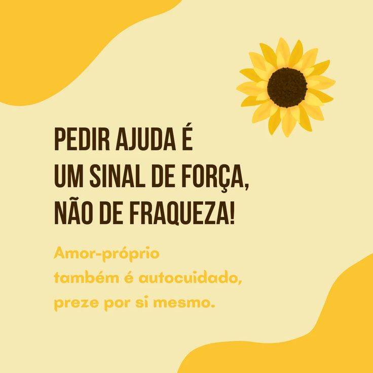

A campanha teve início no Brasil, em 2015, pelo Centro de Valorização da Vida (CVV), Conselho Federal de Medicina (CFM) e Associação Brasileira de Psiquiatria (ABP). As primeiras atividades realizadas pelo Setembro Amarelo aconteceram na capital do país, Brasília. Entretanto, já no ano seguinte várias regiões de todo o país aderiram ao movimento e também participaram.
A Associação Internacional para a Prevenção do Suicídio (IASP) estimula a divulgação da causa em todo o mundo no dia 10 de setembro, data na qual é comemorado o Dia Mundial de Prevenção ao Suicídio.
Esta data foi criada em 2003 pela Associação Internacional para a Prevenção do Suicídio e pela Organização Mundial de Saúde, com o objetivo de previnir o ato do suicídio, por meio da adoção de estratégias pelos governos dos países. Neste dia, realizam-se cerca de 600 atividades em 70 países do mundo para salvar vidas.
O principal objetivo da campanha Setembro Amarelo é a conscientização sobre a prevenção do suicídio, buscando alertar a população a respeito da realidade da prática no Brasil e no mundo. Para o Setembro Amarelo, a melhor forma de se evitar um suicídio é através de diálogos e discussões que abordem o problema.
Suicídio é o ato de tirar a própria vida intencionalmente. Também fazem parte deste comportamento os pensamentos suicidas, planos e tentativas de morte, assim como os transtornos relacionados ao problema.
Durante todo o mês de setembro, ações são realizadas a fim de sensibilizar a população e os profissionais da área para os sintomas desse problema e para a saúde mental.
Assim, fazendo-os entender que isso também é uma questão de saúde pública. Infelizmente para muitos, o suicídio ainda não é visto como um problema de saúde pública, mas sim uma espécie de fraqueza de conduta ou personalidade.
